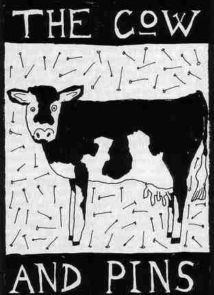

Sunday, January the 25th, 2009
back to: title, date or indexes
It pains me to say it, but a few readers are claiming that the Cow & Pins is a fictional tavern, a tavern simply made up by Mr Key for his own amusement. A “Facebook group”, whatever that might be, has been set up, called The Cow & Pins Is A Fictional Tavern, A Tavern Simply Made Up By Mr Key (Of The Hooting Yard) For His Own Amusement, which, at the last count, had somewhere between three and thirty-five thousand six hundred and forty-six members. One can tell that the originators of this calumny are not true devotees, because they have made the elementary mistake of referring to “The Hooting Yard”, when of course it never attracts the definite article, never has and never will, so long as there is calcium in Mr Key's bones.
Anyway, to prove these accusers wrong once and for all, here is a hyperrealist photograph of the Cow & Pins inn sign, taken by Rex Hyper, the noted hyperrealist.
